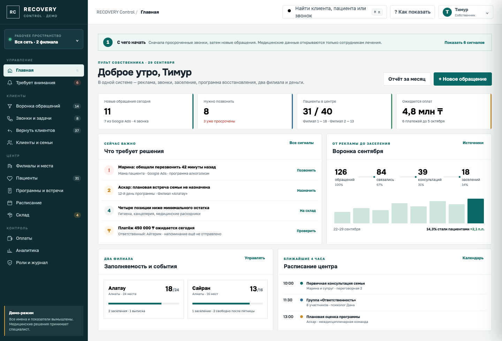
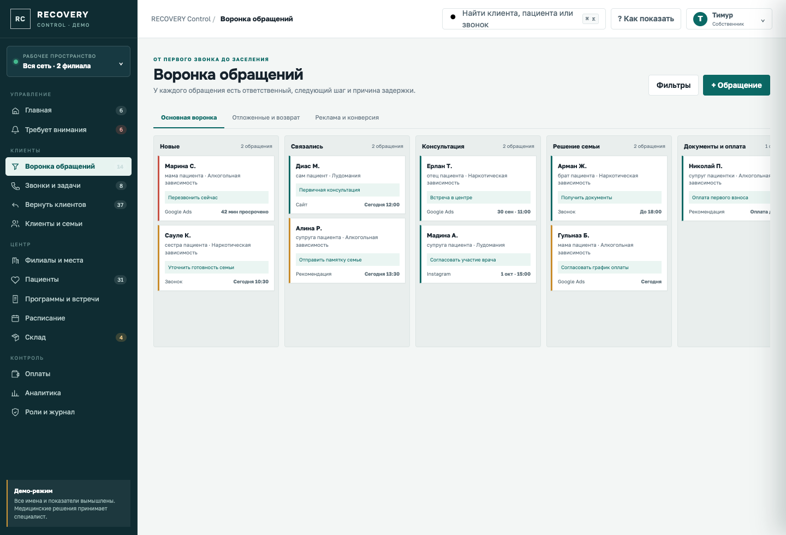
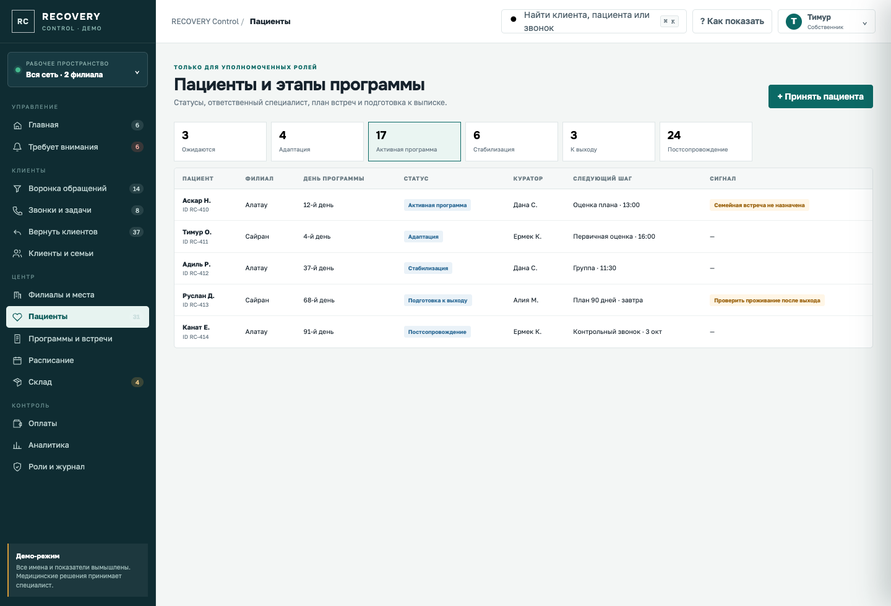
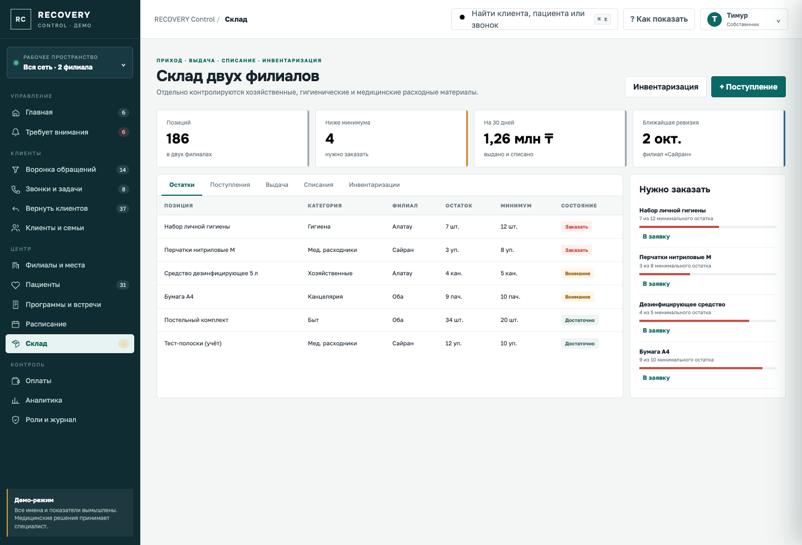

Единая система для отдела продаж, двух филиалов, маршрута пациента, склада и контроля денег — от клика в Google Ads до постсопровождения.
Центру нужно запустить системный отдел продаж и не терять обращения из рекламы, при этом после заселения управлять уже другим, защищённым процессом — программой пациента.
Нужно видеть источник, кампанию и путь: заявка → звонок → консультация → решение семьи → заселение.
У каждого клиента — ответственный, срок перезвона, результат разговора и понятная рекомендация, что сделать дальше.
Отложенные и потерянные клиенты не исчезают: причина, согласованный канал, дата следующего контакта и сегмент возврата.
Места, плановые заселения, статусы пациентов, расписание команды, оплаты и склад доступны в одной системе.
Рабочее название RECOVERY Control и демонстрационные данные используются для проектирования. Название центра, точные филиалы, роли и справочники уточняются на старте.
Контакт обратившегося, источник рекламы, история звонков, задачи, консультации, стоимость программы, документы, график оплаты и причина отказа.
Статус пациента, филиал и место, ответственный куратор, расписание, индивидуальный маршрут, семейные встречи, подготовка к выходу.
Конверсия рекламы, скорость обработки заявок, загрузка филиалов, план-факт оплат, складские сигналы и журнал действий.
Ролевой доступ, журнал просмотров и изменений, согласия на обработку данных. Менеджер не получает доступ к медицинским записям.
Она не ставит диагнозы, не назначает лечение и не принимает медицинские решения. Любые клинические записи и оценки вносит и подтверждает уполномоченный специалист центра.
Сигналы дня, обращения, звонки, пациенты, загрузка филиалов, ожидаемые оплаты.
Этапы от нового лида до заселения, ответственный, срок и карточки с перетаскиванием.
Очередь перезвонов, просрочки, результат разговора, следующий контакт и сценарий.
Сегменты причин, дата возврата, разрешённый канал и повторное включение в воронку.
Контакты, родственник/плательщик, источник, история, консультации и документы.
Вместимость, свободные места, ожидаемые заселения, выписки и переводы.
Организационный статус, этап программы, куратор, задачи и ограниченный доступ.
Индивидуальный маршрут, встречи, групповые занятия, цели и подготовка к выходу.
Календарь филиалов, кабинетов, специалистов, групп и семейных консультаций.
Контрольные точки 7/30/90/180/365 дней, задачи и история повторных обращений.
Приход, выдача, списание, инвентаризация, минимум и остатки по филиалам.
Пакет программы, плательщик, график, фактические оплаты и задолженность.
Google Ads → консультация → заселение, менеджеры, филиалы, загрузка и деньги.
Матрица доступа, история действий, разделение продаж и медицинского контура.
Собственник сразу видит не красивую статистику, а конкретные управленческие сигналы: кому позвонить, где нет места, что оплатить и что заказать.

ЖИВАЯ КЛИКАБЕЛЬНАЯ ДЕМОКарточка двигается по этапам, но главным остаётся следующий шаг: когда позвонить, зачем звонить и что было обещано семье.

КАНБАН + ГЛУБОКАЯ КАРТОЧКАОрганизационные статусы понятны руководителю, а чувствительные записи доступны только профильной роли.

ОГРАНИЧЕННЫЙ ДОСТУПОжидается → адаптация → активная программа → стабилизация → подготовка к выходу → постсопровождение.
Куратор, специалист, семейный консультант, календарь встреч, задачи и контрольные точки выхода.
Вместимость, комнаты, свободные места, ожидаемые заселения, выписки и перевод пациента между филиалами.
Задачи на 7, 30, 90, 180 и 365 дней с фиксацией контакта и согласованным планом поддержки.
В коммерческой воронке нет подробностей лечения. В карточке пациента нет рекламного бюджета и скриптов продаж. Связь контуров — только через минимально необходимый организационный статус.
Склад ведётся по филиалам: поступления, выдача, списания, инвентаризации и минимальные остатки.

ОСТАТКИ ПО ФИЛИАЛАМПриход, выдача, списание, ревизия, категории и история движения.
Плательщик, пакет, обещанный срок, получено и задолженность.
Стоимость лида и заселения, конверсия, менеджеры, филиалы, загрузка.
Учёт лекарственных средств и медицинские назначения требуют отдельного обследования процессов, ролей и применимых требований. В первый релиз включён операционный склад расходных и хозяйственных материалов; расширение фиксируется после обследования.
| Роль | Продажи | Пациенты | Оплаты | Склад | Аналитика |
|---|---|---|---|---|---|
| Собственник | Вся воронка | Только управленческая сводка | Да | Да | Вся сеть |
| Руководитель продаж | Да | Только факт заселения | График | Нет | Продажи |
| Специалист / куратор | Контакт семьи | По пациентам роли | Нет | Нет | Программа |
| Администратор | Заселение | Организационный статус | Да | Выдача | Свой филиал |
| Кладовщик | Нет | Нет | Нет | Да | Склад |
Заказчик согласует регламент доступа и хранения данных, тексты согласий, ответственных за медицинские записи и правила работы с записями звонков. Pllato настраивает технические роли и журнал действий по утверждённому регламенту.
Два филиала, роли, воронка, статусы пациента, поля карточек, складские категории, график оплат и каналы заявок.
Лиды, клиенты, звонки, задачи, канбан, возврат старой базы, импорт и первый отчёт Google Ads → консультация.
Пациенты, размещение, расписание, индивидуальный маршрут, семейные встречи, постсопровождение, роли и журнал.
Операционный склад, графики оплат, панели собственника, тестирование, перенос согласованных данных и обучение команды.
10% общей стоимости. Бронь команды, обследование и запуск разработки.
45% после показа рабочего ядра продаж и базовой модели двух филиалов.
45% после демонстрации состава первого релиза и приёмки.
Срок начинается после получения предоплаты, назначенного ответственного от заказчика и исходных материалов. Срок внешних согласований и предоставления доступов в 4–6 недель не входит.
Разработка, настройка, тестирование, запуск и обучение ключевых пользователей.
Отдельно оплачиваются при необходимости: сервер и домен, тарифы телефонии/WhatsApp/SMS, рекламный бюджет и услуги рекламного кабинета, платёжные комиссии, лицензии сторонних сервисов, 1С и интеграции без открытого API, нестандартный перенос неструктурированных данных, требования сертификации и юридического аудита.
Готовы собрать систему вокруг реального процесса центра и показать первое рабочее ядро уже на второй неделе.